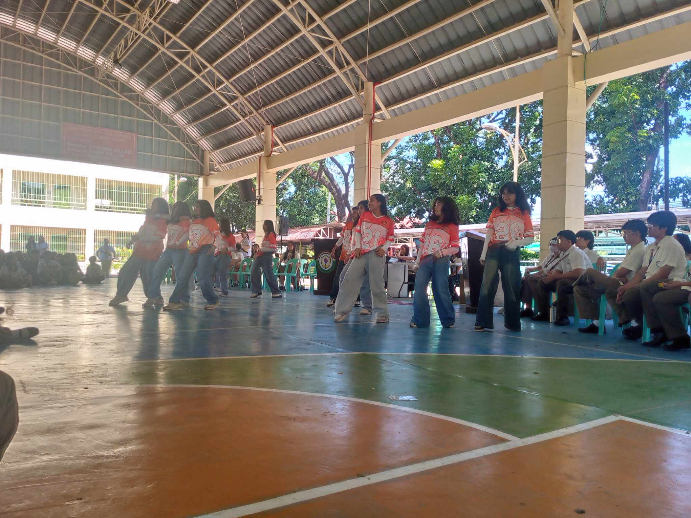
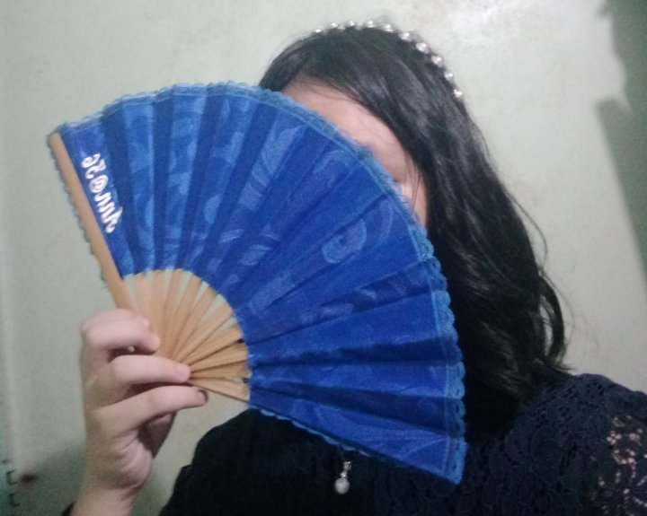

School Activities and Events! |
| While you scroll through this page, listen to this music!
(credit: Puppeteer from EPIC the Musical, by Jorge Rivera-Herrans,Talya Sindel, and the Cast of EPIC)
|
- Street Dance
- This was a video of the performance of the street dance group apex!
|
- Miting de Avanza
- A photo of one of the intermission numbers during the Miting de Avanza
for SSLG elections for S.Y. 2025 - 2026

|
- One Act Play (Practice)
- One of many videos and photos of our practices for the one act play.
- credits to: Yvia Caspe : 9 - Family
|
- Filipino Monologo
- Filmed my Filipino monologo, portraying the character of Donya Victorina.

|
And there's so much more, both captured and uncaptured from the past, and memories that await to be! |